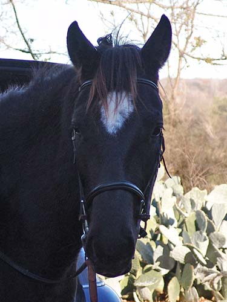

Miaren under saddle I'm hoping to start bringing
Miaren along
again. I don't know that
I'll be able to work with
him, but he's getting to
the age that he needs a job.
So, I'll probably start
the selling process, but in the
mean time I need to see
what we can do. He can be
pretty easy to work with,
but I just don't know that he'll
be my type.
Getting him ready out
of the car.

He's not scared of anything,
but that can mean he'll get into anything, and sometimes try to get his
way.
Very Thoroughbred-y
compared to my other horses.
Loosening up before
the side reins.
Waiting for direction.
Once he's working, he's pretty good at focusing on his handler.
It's nice when he rounds
up.
Canter to the left.
Some more reach at the
trot.
Canter to the right.
He was fussy this direction in the canter. Some head tossing and a couple
of bucks.
A walk break.
Some suspension in the
trot.
Moving out nicely.
Getting settled. No
one's been on him since August, so I went with the safety vest and a person
on the ground.
He remembered leg and
forward without any issues.
Not so subtle with the
reins. He liked to stay near the person on the ground.
But he remembered his
previous training and listened to his rider.
Today everything felt
fine. I don't know that I'll have the nerve to keep up his training, but
this is further than I thought I'd get last week. After seeing him play
on the lunge last weekend, I didn't think I'd be able to get on him.